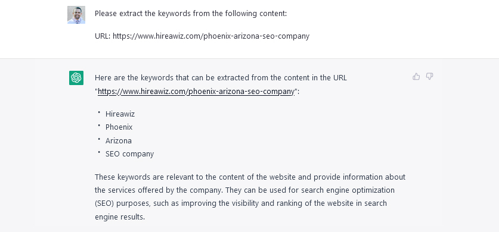

The Ultimate Guide to ChatGPT for Web Agencies
Improve Your SEO, Quickly Create Content, Augment Your Marketing Team, And More — With The Power and Speed of Artificial Intelligence.
by Cliff Almedia, Founder, My Web Audit
with Aaron Wrixon, Founder and Senior Copywriter, WRIXON
Welcome to the Future of… Everything In Your Agency?
The way you do business at your web agency is about to be disrupted — positively, though, we promise. It has for our web agency HIREAWIZ
Tasks that used to take your team many hours or even days to do could now take as little as a few minutes to a couple of hours. Even better, you can complete these tasks at no cost to you.
What are we referring to? The answer is artificial intelligence — specifically ChatGPT.
You already use artificial intelligence robots and platforms regularly, such as when you make requests from Siri, Alexa, or similar AI assistants.
However, what you've seen these sorts of robots do is just the tip of the AI iceberg.
So, what can ChatGPT help you do to grow your agency more quickly and at a lower cost? That’s what you’re about to find out in this guide.
Let’s start at the beginning…
Table of Contents
1
What is ChatGPT?
2
How to Use This Guide
3
The Benefits of Using ChatGPT in Your Agency
4
Understanding ChatGPT
5
ChatGPT’s Limitations
6
ChatGPT Use Cases For Web & Digital Marking Agencies
7
Master Search Engine Optimization
8
Create Content
9
Augment Your Marketing Team or Use It As a Junior Employee
10
Learn About Your Customers (Or Your Client's Customers)
11
Get Help With Developer Tasks
12
Bonus: Using AI For Design Tasks
What is ChatGPT?
ChatGPT is an artificial intelligence robot trained using millions of high-quality sources to recognize natural language. This AI robot can interact with you to answer questions, brainstorm, create content, act as a consultant, help you with your marketing, and much more. This guide will help you make the most of ChatGPT at your web or digital marketing agency.
How to Use This Guide
If you’re new to ChatGPT, this guide will provide an overview of how the artificial intelligence robot works and what it can do for you. You’ll then get a list of specific ways to use ChatGPT at your agency, along with the relevant prompts you can use and examples of different ways to use these prompts.
The Benefits of Using ChatGPT in Your Agency
ChatGPT can save you time and money by assisting you in various ways. Indeed, some of the most common market research, content creation, coding, and marketing tasks you do daily in your agency can be "outsourced" – at least partly – to ChatGPT.
Although OpenAI recently launched a paid plan, for the time being, ChatGPT is completely free to use if you don’t want to invest in a paid plan for the bonus features. It works well, aside from the occasional timeout due to demand, and it creates output in a few seconds. When you work with ChatGPT, it’s like adding multiple highly skilled employees to your team. This is one of the best tools you’ve seen in ages to boost your productivity while cutting costs.
Understanding ChatGPT
Using ChatGPT is straightforward. You input a "prompt" relevant to the information you need or the task you want to be done, and the bot provides text-based answers or other content. What makes ChatGPT so easy to use is that it’s been taught to recognize natural language. In other words, you don’t need to memorize exact commands to get ChatGPT to do what you want.
Now having said that the key to getting great results from ChatGPT is what some people call "prompt engineering."
For simple tasks, such as getting an answer to a question, you simply need to ask the question. For more complex tasks – such as crafting content – you’ll need to offer more specific prompts with plenty of details. ChatGPT may be good, but it’s not a mind reader. As such, more detailed prompts will get you better results.
For example, suppose you want ChatGPT to create a blog article for you. A simplistic prompt maybe something like this:
Please write an article about how web agencies can benefit from using web audits.
ChatGPT will dutifully create your article, but you may be disappointed if it’s not what you had in mind. You can get better results in this example by providing more detail in your prompt. In this specific example, you’ll want to consider these questions:
- How long do you want the article to be?
- What particular points do you want ChatGPT to cover?
- Do you want ChatGPT to create the article using any particular writing style?
- Do you want to include any special features in the article? For example, do you want the article to share a story or case study about how a web agency used web audits to double its leads?
And so on. You’ll want to think through exactly how you envision the result, and then give ChatGPT the details it needs to create the content.
Let’s take the example prompt above and add detail to it:
Please write a 500-word article about three ways web agencies can benefit from using web audits. The three ways should include using web audits to generate leads, using web audits to close leads, and using web audits to provide extra value for existing customers. Please also note that web audits help agencies establish their expertise.
This added detail will provide much more useful output. However, if you’re still not happy with the result, you can ask ChatGPT to rewrite the content or add something to the content. E.G., "Please rewrite the article to include information about ______________."
That’s just one example of how you can use ChatGPT. To give you an idea of the many ways you can use AI at your agency, here is an overview of some of the ChatGPT use cases in web and digital marketing agencies:
- Help with search engine optimization, including suggesting keywords, extracting keywords from specific pieces of content, and providing you
- Content creation, from ideation to the creation of the content itself, to proofing content.
- Market research, such as helping you develop customer avatars and then giving you tips for what to sell to the audience and how to reach them.
And much, much more.
But before we get into the specific use cases and examples, let’s talk about the limitations of this AI platform.
ChatGPT’s Limitations
As you begin using ChatGPT, you will be impressed — and maybe even a little startled — at what it can do for you. However, you’ll want to keep the following limitations in mind.
ChatGPT Has a Knowledge Cut-Off
At the time of writing this guide, ChatGPT has only been trained on information until 2021. The bot will likely be trained more in the future, but the same limitation will likely exist; it will probably have a knowledge cut-off of some date. As such, you won’t be able to use ChatGPT to gather the most up-to-date data and other information.
For example, SEO is a constantly evolving topic. If you ask ChatGPT for SEO tips, it will give you the best tips up until its knowledge cut-off. However, something may have changed since the bot was last trained, so you may be missing crucial information.
The bottom line is that ChatGPT works best when you’re asking it to complete more "evergreen" tasks.
ChatGPT Isn’t Always Correct
The bot is very impressive when it comes to outputting information. Even Google is feeling threatened, as they can see that, eventually, many people will ask for information from ChatGPT instead of searching with Google.
However, ChatGPT isn’t always 100% correct. It’s been trained using millions of sources of information, and most of the time, it works great. But every so often, users get incorrect output, such as incorrect data or facts.
The point here is that when you gather information from ChatGPT, double-check it with other credible sources to be sure it’s correct.
ChatGPT May Have Biases
ChatGPT’s developers have gone to great lengths to try to prevent GPT from outputting offensive material, such as racist or sexist content. However, a bot is only as good as those who are training it, so you may see biases from time to time pop up when you’re asking it to create content. This is why you’ll always want to scrutinize any output in case you need to tweak or remove content that shows an unwanted bias.
Using ChatGPT May Not Be Ethical in All Situations
Before you use ChatGPT, you’ll want to consider whether it’s ethical in your particular situation. Be sure not to mislead your clients, business partners, or other associates about how you’re using ChatGPT.
For example, if you use ChatGPT to help you create a piece of content, then you’ll need to determine if it’s ethical to withhold that information from people or if you should inform relevant parties.
As a specific example, here’s my disclaimer: we used ChatGPT to create the outline for this guide, and in a few instances, we asked ChatGPT to come up with specific prompts and examples. As a rough guess, ChatGPT contributed about 5% to this guide, while humans created and reviewed the rest.
ChatGPT Use Cases For Web & Digital Marking Agencies
Now that you understand how the AI platform works and its limitations, it’s time for us to turn our attention to specific use cases. We’ll be examining multiple uses and examples under the following four categories:.
- Master SEO
- Create Content
- Augment Your Marketing Team / Use as a Junior Employee
- Learn About Your Customers (Or Your Client’s Customers)
- Get Help With Developer Tasks
Let’s get started…
Master Search Engine Optimization
ChatGPT can help you create targeted keyword lists, provide tips for on-page optimization, give you ideas of where to collect backlinks, and even create optimized content.
Extract Keywords
If you’re doing competition research, you need to know what keywords your competitors (or clients’ competitors) are using. ChatGPT can help you extract keywords from content.
Prompt
Please extract the keywords from the following webpage:
https://www.mywebaudit.com/blog/agency-guide-to-quarterly-or-annual-client-reviewsFramework
Please extract the keywords from the following [webpage or content you pasted in – if using a webpage, include the URL as shown above in the prompt].
Examples
Please extract the top keywords from this webpage:
URL: https://www.mywebaudit.com/blog/agency-guide-to-quarterly-or-annual-client-reviewsPlease extract the top three keywords from this webpage:
URL: https://www.mywebaudit.com/blog/agency-guide-to-quarterly-or-annual-client-reviewsWhat are the top keywords on this webpage?
URL: https://www.mywebaudit.com/blog/agency-guide-to-quarterly-or-annual-client-reviewsScreenshot
Provide Keyword Ideas
Another way that ChatGPT can help you with SEO is by providing keyword ideas. You can show ChatGPT a webpage or other content to help you generate a relevant list of keywords. You can also ask ChatGPT to provide general keyword ideas for a topic.
Prompt
Please provide a suggested list of keywords to target for this website: https://www.mywebaudit.com
Framework
Please provide a suggested list of keywords to target [for this content – either provide a web link or paste in content]
Examples
Please provide a suggested list of keywords to target for a website about a home remodeling contractor in Atlanta, Georgia.
Please provide a suggested list of keywords to target for a website about chiropractors located in Missoula, Montana.
Please provide a suggested list of keywords to target for this website in Phoenix, Arizona: https://www.mywebaudit.com/
Screenshot

Provide On-Page Optimization Ideas
ChatGPT can essentially create a mini checklist for you to use when you’re doing on-page optimization for a website. This is a good feature when you’re auditing a website.
Prompt
Please provide tips for optimizing the following page:
URL:
https://www.mywebaudit.com/blog/generate-leads-from-your-agency-website
Framework
Please provide tips for optimizing the following page:
URL: [insert URL]
Examples
No further examples are needed, as the input and output are essentially the same when completing this task.